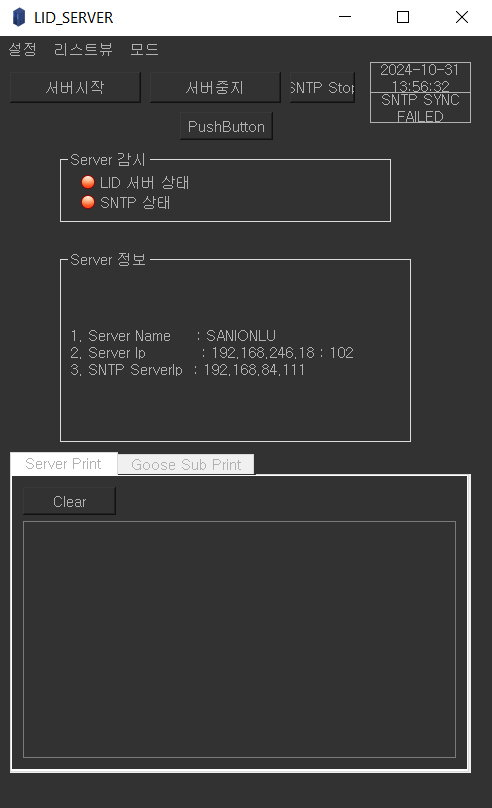
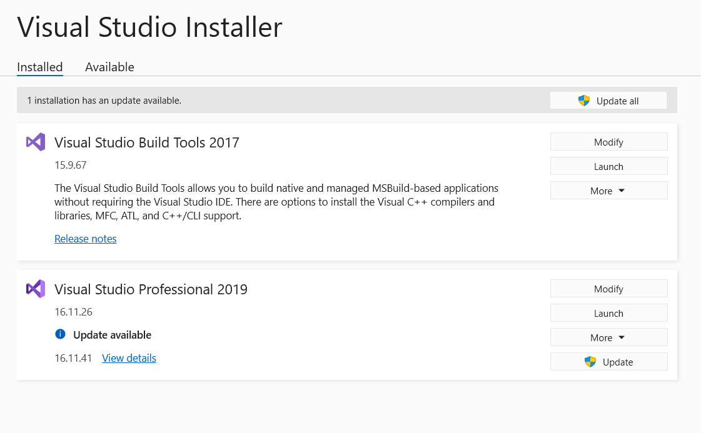
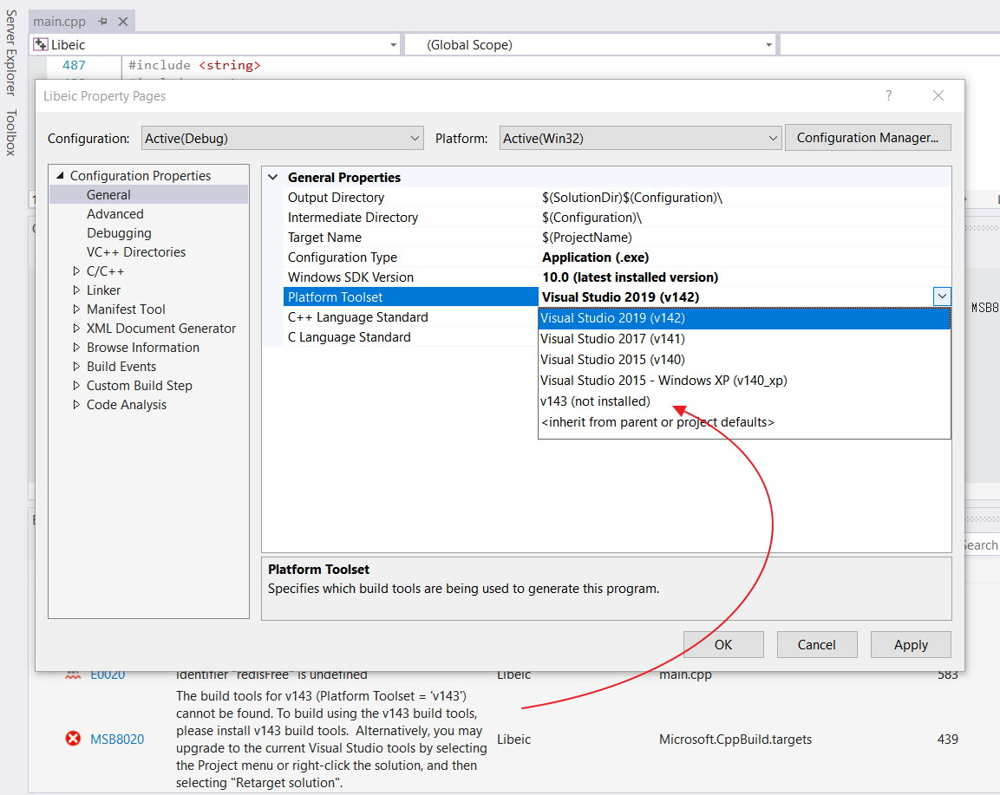
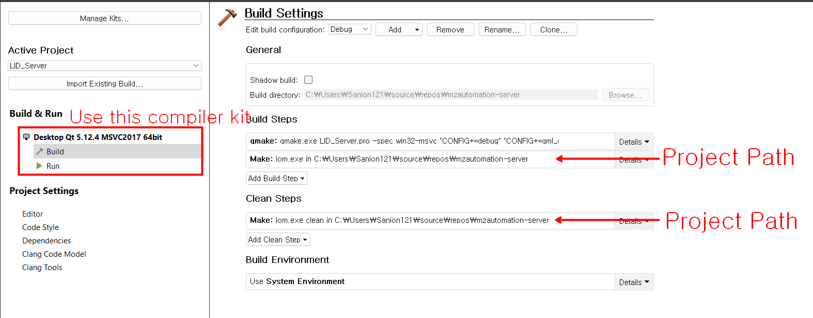
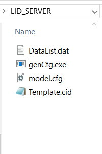

PD Sensor |


msg_rf_info_packet->header.msg_id = MSG_RF_INFO_ID;
msg_rf_info_packet->header.msg_type = MSG_REQUEST_TYPE; //MSG_SEND_TYPE; // MSG_REQUEST_TYPE;
msg_rf_info_packet->header.body_len = 0x3300; // Endianness reversed.
msg_rf_info_packet->amp_enable = 0x01;
ConsoleMemMgr.c file shows measured value from the DSP came from ADC->FPGA->PCIe .
SharedMemMgr.c
Analog Data is transferred to the CPU in an gloabl data object g_pAISharedMem.
global.h
Code below looks like gathering data from DSP into g_pAISharedMem instance.
SharedMemMgr.c
ConsoleMemMgr.c function void CDM_Display_MEAS() shows
So preferebly this code is showing BCT values as below :
void *Console_ProcessMain( void *arg ) in ConsoleMemMgr.c is the thread for diplaying the data from ADC. Which
eventually called CDM_Routine(); The thread while loop is creating a delay as below:

SharedMemMgr.c
Analog Data is transferred to the CPU in an gloabl data object g_pAISharedMem.
extern volatile dsAISharedMemory *g_pAISharedMem; Code below looks like gathering data from DSP into g_pAISharedMem instance.
void InitSharedMemory(U8 *pCMemVAddr)
{
g_pAISharedMem = (dsAISharedMemory*)pCMemVAddr;
g_pIOSharedMem = (dsIOData*)(pCMemVAddr + DDR_DIO_DATA_OFFSET);
g_pLUAppSharedMem = (dsLUAppSharedMemory*)(pCMemVAddr + DDR_LU_APP_DATA_OFFSET);
g_pSTBSharedMem = (ds61850SharedMemory*)(pCMemVAddr + DDR_STBP_DATA_OFFSET);
// Clear
memset((dsAISharedMemory*)g_pAISharedMem, 0x0, sizeof(dsAISharedMemory));
memset((dsIOData*)g_pIOSharedMem, 0x0, sizeof(dsIOData));
memset((dsLUAppSharedMemory*)g_pLUAppSharedMem, 0x0, sizeof(dsLUAppSharedMemory));
memset((ds61850SharedMemory*)g_pSTBSharedMem, 0x0, sizeof(ds61850SharedMemory));
}
1. Somehow data packet from DSP assigned in to pCMemVAddr and casted to (dsAISharedMemory*) to g_pAISharedMem.
int SharedMemMgr_MemCheck(void)
{
//Shared memory check.
if(g_pAISharedMem == NULL)
{
printf("[%s] ERR: Shared Memory is NULL!");
return -1;
}
else
{
system("/apps/dspUnbind.sh");
DspManager_DSPOn();
usleep(3000*1000); //wait DSP boot
}
...
...
}
ConsoleMemMgr.c function void CDM_Display_MEAS() shows
MEASMO command data. Most data came from g_pAISharedMem object. So preferebly this code is showing BCT values as below :
...
...
// BCT current display
fReferenceAng[0] = g_pAISharedMem->m_dsMeasValueData.m_dsBCTDataInfo.m_f32Ang[0];
fReferenceAng[1] = g_pAISharedMem->m_dsMeasValueData.m_dsBCTDataInfo.m_f32Ang[3];
for(i=0; im_dsMeasValueData.m_dsBCTDataInfo.m_f32Ang[i]-fReferenceAng[i/3];
if (fRelativeAng[i] > 0)
{
fRelativeAng[i] -= 360.0;
}
printf(" BCT %1d | %8.2fA %8.2fdeg", (i+1), g_pAISharedMem->m_dsMeasValueData.m_dsBCTDataInfo.m_f32Mag[i], fRelativeAng[i]);
}
...
...
This function
while(!Console_ThreadExit)
{
//Console Display Routine
// modified by symoon
if (i==0) {
CDM_Routine();
i++;
}
else {
i++;
if (i>10000) {
i=0;
}
}
//Command Line Interface Routine
CLI_Routine();
sched_yield();
//usleep(50000); // added by symoon (unit is microsecond.)
}
What is COMTRADE ?
Comtrade Wiki Page Link .What is COMTRADE ?
Comtrade Wiki Page Link .
Seems like server part is about to build.
IEC61850 Server And Client.
Virtual IED Software.
Load ICD file to virtual IED Software.
IEC61850 Server And Client.
Virtual IED Software.
Load ICD file to virtual IED Software.
MZAutomation Server (IEC61850 Server)
MZAutomation Server is a IEC61850 complient server. It can connect with ClientProc (IEC61850 Client Desktop App).
 Clone Repository from http://git.sanion.com:8891/protection-and-analysis-system/software-team/mzautomation-server.git .
Open the project in Visual Studio. If it is Visual Studio 2019 then it is required to install Visual Studio Build Tools 2017.

cmake -G "Visual Studio 16 2019" .. -A x64 or cmake -G "Visual Studio 15 2017 Win64" .. for Visual Studio 2017. When Open a Visual Studio project from another machine and another version of Visual Studio It is often a common error :
Error MSB8020 The build tools for v143 (Platform Toolset = 'v143') cannot be found.
To build using the v143 build tools, please install v143 build tools.
Alternatively, you may upgrade to the current Visual Studio tools by selecting the
Project menu or right-click the solution, and then selecting "Retarget solution".
Libeic C:\Program Files (x86)\Microsoft Visual Studio\2019\Professional\MSBuild\Microsoft\VC\v160\Microsoft.CppBuild.targets 439

QT C/C++ project has a

This LIDServer has a ini file

[SERVER]
Name=TEMPLATE
IP=192.168.246.57
PORT=102
NIC_IDX=1
CFG=C:\\SA Posco Git\\Projects\\mzautomation-server\\LID_SERVER\\model.cfg
AUTO_RUN=true
MAKE_MEM=true
AUTO_GOOSE_RUN=false
AUTO_RUN_TIME=20
[SNTP]
IP=192.168.84.111
RETRY=2
POLLING_TIME=5000
SYNC_TIME=1
[LOG]
MAIN=false
MAIN_FILESAVE=false
GS=false
GS_FILESAVE=false
FILEPATH=C:\\Log\\
[SETTING]
PollingCheck=true
NoDevice=false
EventLog=false
GooseSimulMode=false
GooseEchoMode=false
MeasMargin=1
GSValid=false
[LIBRARY]
Custom=true
Edtion=0
B_size=1000
File_Path=c:/test1
Client_Max=5
DataSet_Max=10
[GOOSE]
1=CTRL/EXTDIGGIO11$ST$Ind01$stVal
2=CTRL/EXTDIGGIO11$ST$Ind02$stVal
3=CTRL/EXTDIGGIO11$ST$Ind03$stVal
4=CTRL/EXTDIGGIO11$ST$Ind04$stVal
‘Alarm’ tab of PD event table show all the PD data. Needs to be fixed to display only ‘alarm’ data instead (F)
Since we need to fine tune a model, we don’t need the library tab to update the model (F)
On CB Trend Chart, need to fix the UI to display the date time when there are many data for ‘Daily’ option (F)
Need to fix the current time format to ‘dateTime’ format without 'T' (F)
Need to fix ‘OLTC Reference Chart’. - It’s unclear what the original intention of the implementation was (F)
Need total records count on every alarm table (F)
Need to apply dynamic column structure to Alarm table. It might need a limit to number of columns not to break the UI though (F)
Need to browse between ‘2024.02.01’ and ‘2024.11.21' to browse SIML data
Trend chart should be updated only upon clicking ‘Search’ button. Some trend chart UI is not unified (F)
Make console appear in front of a table when an icon is hovered on ‘GLU Summary Page’. (F)
Need to convert a text from ‘Show GIS’ to ‘Show Bay’ on ‘GLU Summary Page’. (C,F)
Need to utilize all the blank space at the bottom of ‘MLU Summary page’ by adding more rows to the PD table to display. (F)
Need to store complete English and Korean sentence for ‘Details’ of data and have it display English/Korean by clicking ‘Eng/Kor’ button. (F)
‘Report’ page need Korean translation (F)
Error happens on alarm page when user searches with options left as blank (F)
It needs to navigate to the selected monitoring page when a alarm data is clicked on the table of alarm page (F)
Roles need to be dynamically assigned on Role page (F)
Calender need to be updated to the newer version on ‘Management page’ (F)
‘SelectLU’ and ‘SelectSensor’ need better UI not to overlap each other on ‘LU Dataset Configuration’ page
On ‘LU Dataset Configuration’ page, there seem to be mismatch on data and definition. So need to check the translation of the configuration file used. Then need to call ‘Initialize’ api on ‘Setup’ of ‘Swagger’ (F)
Need a convenient UI to open PRPS/PRPD chart of the related channels. Nearby PD channels can affect to one another. For instance, Need to open the channel for phase A and phase C from the console for phase B. (F)
We can try a ultra violet glass cleanser device for the PD noise generator.
Need to change the UI to search from GIS or M.Tr instead of GLU/MLU on every drop down options including the one on Alarm page (F)
Need an alarm notification or UI on dashboard and monitoring pages to compare the status between yesterday and today, this week and last week and this month and last month. (F)
Come up with the better naming conventions for GLU/MLU since it’s free to come up with our own. The key is to make operator easy to distinguish which channels of bay or M.Tr they are by just reading the names. For instance, 65BAY-1, 65BAY-2, #1M.Tr Phase A, #2M.Tr Phase B.
Have a UI to redirect either to ‘MLU Summary Page’ or ‘GLU Summary Page’ of the specified date upon clicking a point of Dashboard’s chart. Thus, we need to load MLU Summary Page or GLU Summary page with the specific date as well (F)
RCB data transfers to Client (ClientProc) depends on 5/6 options:
1. Data Change.
2. Update.
3. Request From Client.
4. At Regular Interval.
4th Order Cumulant Filter Implementation and Performance Test (Experimental)
Suggested by @hanankibria we should apply method number 5, where this method is also completely described in the reference book with Matlab script. We need to convert the Matlab code into C, Python and may be C# for more performance testing.
This description discusses completely mathematical terms but no program or code application examples. The coding and performance testing are still experimental stage. Some terms used in this description are not commonly used in general programming filed. @hanankibria suggest that I should read and apply the code for more understanding.
This document states the term cumulant which I think is similar to harmonics of a time series signal or a signal that contains different frequencies. Our signal contains useful frequency and other noises as 1st 2nd 3rd 4rth … kth order harmonics. Document suggest that we will filter out 3rd 4rth and higher order harmonics / cumulants and we do not need to filter 2nd order harmonics.
Here the statement “The high order cumulant of a signal contaminated with static noise is equal to the high order cumulant of the signal without noise” , it looks applicable.
According to chat GPT I asked why we should apply 3rd and 4th order cumulants for Filters. Here are the responses:
In Digital Signal Processing (DSP), cumulants are a set of statistical measures that provide deeper insights into the characteristics of a signal, especially for analyzing non-Gaussian (non-normal) and non-linear systems. They are related to moments (like mean, variance, skewness, and kurtosis), but they are more focused on revealing the hidden structures in the data that are not captured by simpler statistics.
Convolution function for DSP Filter.
def func_conv(kernel, input_array):
"""
Custom convolution function similar to MATLAB code.
"""
kernel_len = len(kernel)
input_len = len(input_array)
cum_conv = np.zeros(input_len)
kernel_indexes = []
#F = 0
for k in range(input_len):
F = 0
kernel_loop_count = 0
kernel_indexes.clear()
for j in range(max(0, k + 1 - input_len), min(k + 1, kernel_len)):
F += kernel[j] * input_array[k - j]
kernel_loop_count += 1
kernel_indexes.append((max(0, k + 1 - input_len), min(k + 1, kernel_len), (k + 1 - input_len), ('j=',j)))
cum_conv[k] = F / min(k + 1, kernel_len)
print(f'kernel_loop_count = {kernel_loop_count} - k={k} {kernel_indexes}')
# print((min(k+1, m)))
#print(F)
return cum_conv